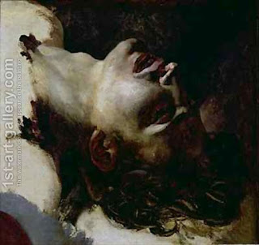

Niddah 69 - A Zav Who Died
A zav (and also a zavah, a niddah, and a metzora - spiritual leper) who died, all convey ritual impurity through carrying. But - the Talmud asks - all dead bodies convey spiritual impurity through carrying!? - Well, here we are dealing with a case where a corpse lay on a massive, immobile stone. Since this stone is very heavy, then an object below the stone it does not really "carry" the corpse on top of it, and thus this object does not become ritually impure because of the corpse. However, if this corpse belongs to a zav, then the object under the stone does become ritually impure.
In truth, the corpse of a zav does not transmit ritual impurity either. It is the Sages, who decreed that it does, because this may be confused with a live zav, lying on the top of the stone. The concern was that if a dead zav does not carry ritual impurity, then people may confuse him with a live zav who fainted, who does carry impurity. To prevent this confusion, the Sages decrees that a dead zav should have the same impurity as the live one would.
Art: Theodore Gericault - Head of a Dead Young Man